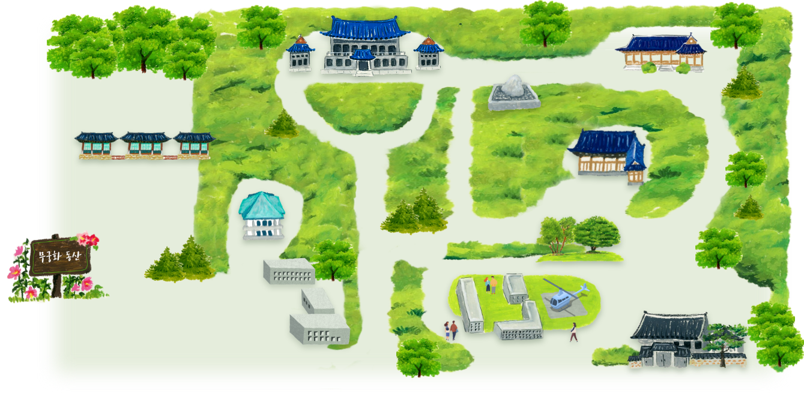

개방의 의미
청와대 소개
역사
지도 및 주요시설
경내 주요 유적
관람안내
관람 규칙 믹 규정
관람 시간 및 해설 안내
관람 신청
관람 안내도
함께 가 볼 만한 장소
공연 프로그램
등산로
개요
등산로 코스
등산로 이모저모
오시는 길 및 교통정보
오시는 길
청와대 관람 순환버스
서울시자율주행버스(청와대A01)
국민소통
공지사항
미디어 센터
자주 하는 질문
내가 만드는 청와대
관람후기
지도 내의 장소를 클릭하여 자세히 살펴보세요

청와대 본관
1
영빈관
2
대통령 관저
3
구 본관터(수궁터)
4
상춘재
5
녹지원
6
여민관
7
춘추관
8
무궁화 동산
9
칠궁
10